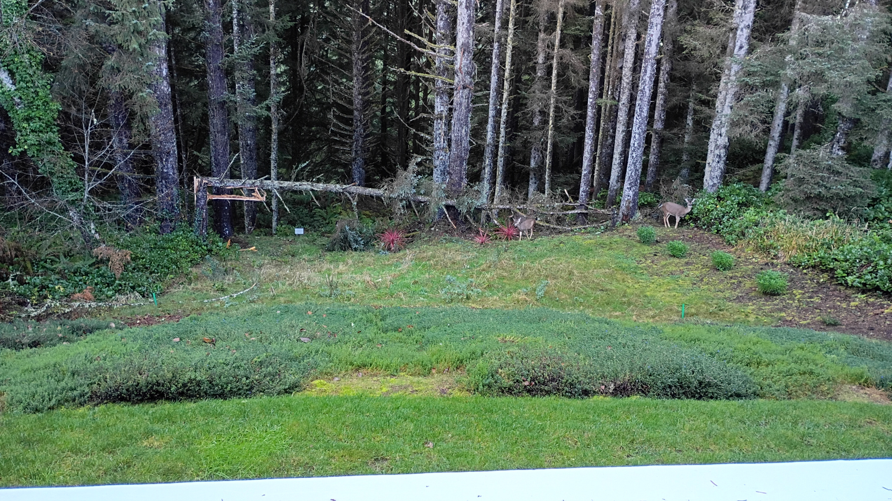

Snow.
❄
Bunch of wind and rain lately? It's the coast. It's winter. Makes sense. Two atmospheric rivers in as many weeks? That's a tad abnormal. Lots of flooding. A couple roads either had landslides fall across the top of them or flowing water undercut the ground beneath them. Either way you get a road that's not usable for a while.
Also, I'm not quite sure why the Oregon Department of Transportation has a Flickr page, but it's kinda nifty they do. It also kinda feels old school, like they might still have an AOL email address. I picture them sitting in their chairs, faces illuminated by the glow of the computer screen, rubbing their hands together while whispering, "Someday. Someday. Someday." over and over again.
Eternal optimists, are ODOT employees.
The storms did a little damage to our yard, as you can see below. Our property backs up to a forest - actually the final thirty feet or so of our yard is the forest - and one of the trees gave up the ghost during the first windstorm.

Eventually we'll get some one to chop it up a bit and we'll just let it lie, it's a PNW forest on the coast, there's already a bunch of trees down.
caveat lector